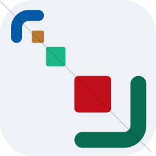
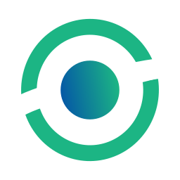
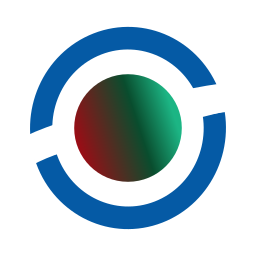

A running record of every app-icon candidate tried, in order, with a brief verdict on each. Renders are shown both at full size and — since several rejections only became obvious at small scale — the notes call out how each held up around 22–24px (taskbar/launcher size). Ends with the icon currently shipping on desktop and mobile.
The starting candidate. Literal and a little generic — didn't carry a distinct silhouette of its own, so it was quickly set aside in favor of exploring the more abstract "flow" concepts below.
First "corner-brackets around a ring" design. Legible but busy — soft/blurred edge treatment and a lot of competing shapes for a small icon.

03A diagonal scatter of small shapes (dots/squares fading along a line). No coherent silhouette — falls apart into noise at taskbar size. Clearest miss of the set.
A revision of the same corner-bracket concept. Cleaner than v1, but the background was still a plain square with sharp corners — asked for rounding next.
rx="32" ry="32")
Rejected
Same design with the background rounded out to a full circle (rx = half the icon size). Softer, but "circle" turned out to read as a bit generic — later revisited as the "less circular" complaint that shaped the final design.

06A different family: a colored ring with a solid gradient dot at the center. Bold and holds up well even at small size, but read as fairly generic/abstract — no visual tie to "projects" or "windows."

07Same ring-and-dot family with a red-to-green gradient center. The red tint reads as "alert/warning" rather than a neutral brand mark, clashing with the app's blue/green palette elsewhere.
Blue ring, solid green gradient dot, white circular background. The strongest of the ring/dot family — bold and legible at every size — and was the live icon for several days before the corner-bracket concept was revisited.
Back to the corner-bracket-window concept, now with two colored squares as the "window panes." The first pass shipped with no background fill and two faint (30%-opacity) brackets — at taskbar size it collapsed into a barely-visible blue blob. Fixed in place: added a white rounded-square backdrop and brought the faint brackets to full opacity. Shown here is the corrected version.
Same window-panes concept, background fill included this time — but two of the four corner brackets were deliberately drawn at ~9–12% opacity. At full size they're just faint; at taskbar size they vanish almost completely, leaving a lopsided icon with only two visible corners.
Fixed the "too circular" complaint from v3 above: background corner radius reduced from a full circle (rx=32) to a rounded square (rx=14) — a "screen"-like shape rather than a blob, while staying square so no launcher/OS icon mask crops it. Still carried flow-8h's two near-invisible corner brackets at this point.
Final pass on flow-8i: the two faint corner brackets were changed from near-invisible low-opacity strokes to solid, fully-opaque pastel tints (light blue / light green, matched to the lightness of the pale-blue window pane) — visible but clearly secondary to the two full-opacity corners. The two center "window pane" rectangles were also re-centered vertically. The only design in the corner-bracket family where all four corners and both panes stay legible all the way down to taskbar size, while keeping the more on-brand "window/project" motif over the more generic ring-and-dot alternatives.